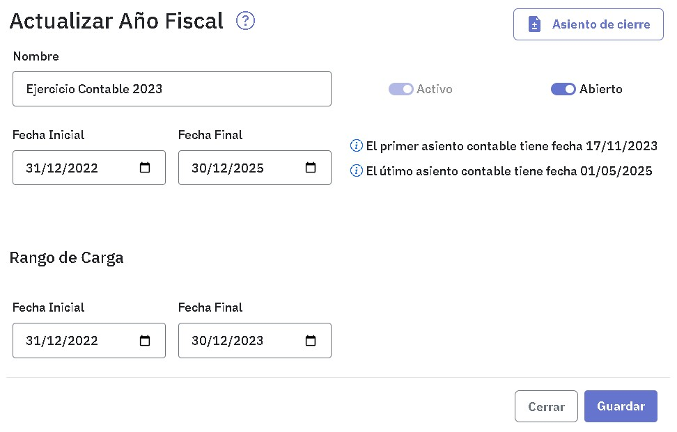
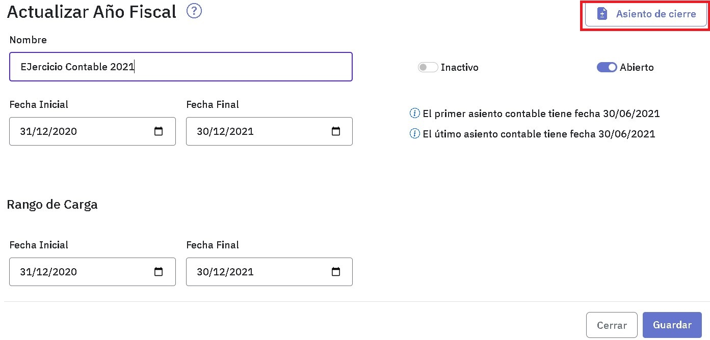

Año fiscal
Un año fiscal representa un ejercicio económico por lo cual tiene una fecha de comienzo y otra de fin. Dentro de ese período se puede indicar un rango más acotado de fechas para la carga de asientos de modo de evitar imputar asientos fuera de dicho rango.
Es posible definir varios años fiscales. Estos pueden estar en estado “Abierto” o “Cerrado”. Si bien es posible tener varios años fiscales abiertos, sólo uno de ellos puede estar activo. Este es el único año fiscal en el cual pueden registrarse asientos, Al indicar como activo a un año fiscal, automáticamente los restantes pasan a estar en estado inactivo.
Por ejemplo, si estás trabajando en el año fiscal 2024 y necesitás cargar un asiento en el año fiscal 2023, tenés que pasar a activo este año fiscal, inactivándose automáticamente el año fiscal 2024.
Tenés que tener en cuenta que no es posible crear un año fiscal cuyas fechas desde/hasta abarquen parcial o totalmente el período definido para otro año fiscal ya creado.
Para la emisión de informes pueden seleccionarse todos los años fiscales, activos o no, abiertos o cerrados.
Al ingresar, verás los años fiscales que ya hayas definido, con las fechas correspondientes a su inicio y fin y el estado en que se encuentran (Abierto o Cerrado).

Para crear un nuevo año fiscal tenes que completar el nombre y susfechas inicial y final . En caso de querer acotar el rango de carga, podes modificar las fechas inicial y final siempre y cuando éstas se encuentren comprendidas dentro de las fechas inicial y final del año fiscal.
La activación del ejercicio económico podes hacerla ahora o en una instancia posterior, cuando tengas que trabajar en él.
Tené en cuenta que, si bien podés modificar las fechas de un año fiscal ya creado, sólo podes hacerlo si no hay asientos fuera del rango determinado por las nuevas fechas. Para facilitarte el control observá que, al editar un año fiscal que ya tiene movimientos, se exhiben las fechas del primer y último asiento ingresados.

Asiento de cierre
El asiento de cierre correspondiente a un año fiscal se genera de manera automática. Para su generación, se consieran todos los asientos registrados en el diario general para dicho año fiscal .
El asiento contiene todas las cuentas que hayan tenido movimientos durante ese período. Las que presenten saldo deudor aparecen con su saldo al Haber y las que presenten saldo acreedor aparecen con su saldo al Debe. Como resultado, el saldo de todas las cuentas quedará en cero.
Una vez generado el asiento, éste queda indicado como de tipo "Cierre". Esto posibilitaque al al emitir un balance puedas indicar si se incluye o no.
Para generar el asiento de cierre tenés que editar el año fiscal correspondiente y presionar el botón . Tené en cuenta que el año fiscal debe estar abierto.

Completá los datos de la pantalla que se abre a la derecha:
Los datos a completar son:
-
La fecha del asiento: te muestra la fecha actual, la fecha que ingreses debe estar dentro del rango de carga.
-
El número de asiento: te muestra el siguiente numero disponible y podés modificarlo.
-
Si es necesario, ingresá una observación.
Una vez que completaste los datos, presioná el botón "Generar" y verás un mensaje de confirmación. Desde allí disponés de un enlace para consultar el asiento generado.